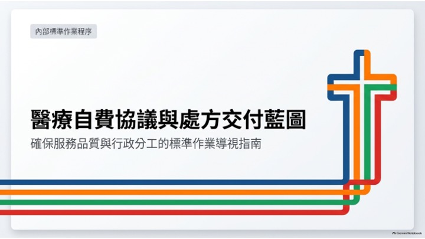
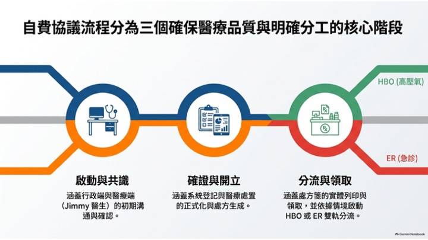
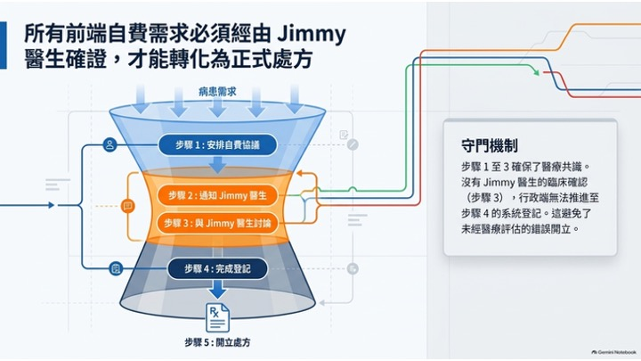
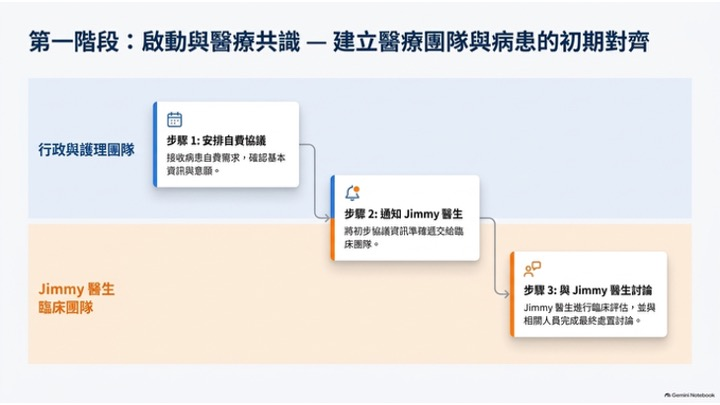
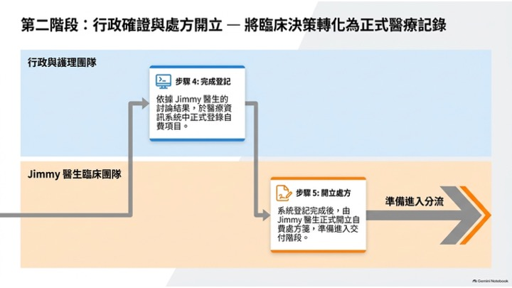
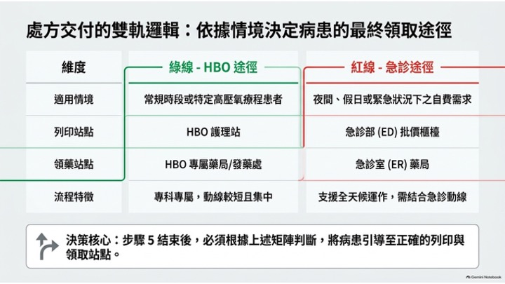
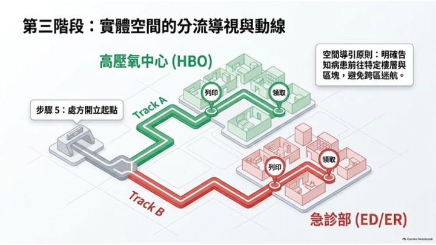

專為未投保或選擇自費的病患設計，從掛號到完成繳費的透明化完整指南
當病患沒有保險（或選擇不使用保險）時，醫療機構會啟動一套專用作業流程， 重點在於費用透明、準確預估以及即時收款。此流程同時保障病患與機構權益， 並符合相關法規（如善意費用預估）的要求。
完整收集病患基本資料與聯絡資訊，並確認其為自費身份。

在提供服務前，先以書面提供預估費用（自費病患依法應收到善意費用預估）。

向病患說明自費折扣、付款方式，以及是否符合任何財務協助方案。

於服務前或服務當日收取全額或部分訂金，以降低後續催收風險。

提供醫療服務，並正確記錄每一項實際執行的處置、耗材與程序。

產出明細帳單，清楚顯示原始預估、實際費用、已套用折扣與剩餘應繳金額。

收取剩餘款項、入帳，並在全額結清後關閉帳戶。

良好的自費流程以「透明」、「書面預估」、「明確折扣」與「即時收款」為核心。 遵循以上步驟可減少突如其來的帳單爭議、提升現金流，並建立病患信任。
下載自費政策範本